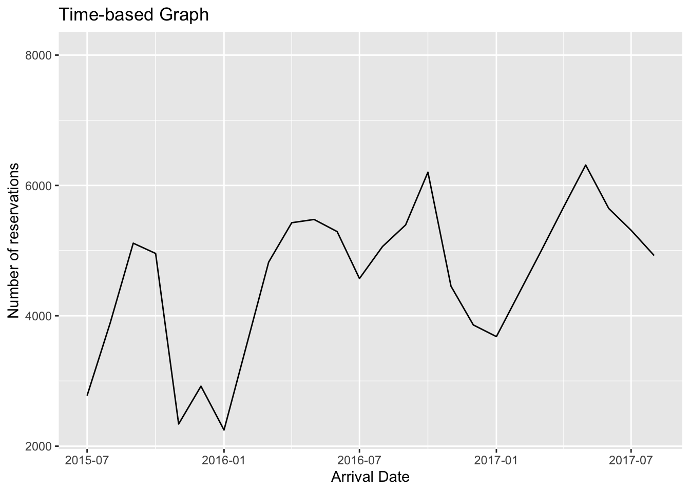
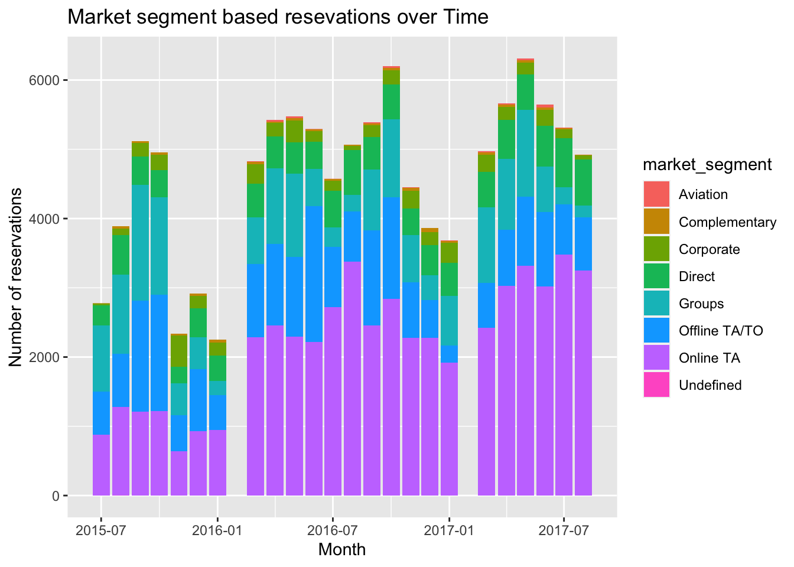

library(tidyverse)
library(ggplot2)
knitr::opts_chunk$set(echo = TRUE, warning=FALSE, message=FALSE)Challenge 6 Solution
challenge 6
hotel_bookings
Visualizing Time and Relationships
Challenge Overview
Today’s challenge is to:
- read in a data set, and describe the data set using both words and any supporting information (e.g., tables, etc)
- tidy data (as needed, including sanity checks)
- mutate variables as needed (including sanity checks)
- create at least one graph including time (evolution)
- try to make them “publication” ready (optional)
- Explain why you choose the specific graph type
- Create at least one graph depicting part-whole or flow relationships
- try to make them “publication” ready (optional)
- Explain why you choose the specific graph type
R Graph Gallery is a good starting point for thinking about what information is conveyed in standard graph types, and includes example R code.
(be sure to only include the category tags for the data you use!)
Read in data
Read in one (or more) of the following datasets, using the correct R package and command.
- debt ⭐
- fed_rate ⭐⭐
- abc_poll ⭐⭐⭐
- usa_hh ⭐⭐⭐
- hotel_bookings ⭐⭐⭐⭐
- AB_NYC ⭐⭐⭐⭐⭐
hotel_bookings <- read_csv("_data/hotel_bookings.csv")
head(hotel_bookings)# A tibble: 6 × 32
hotel is_canceled lead_time arrival_date_year arrival_date_month
<chr> <dbl> <dbl> <dbl> <chr>
1 Resort Hotel 0 342 2015 July
2 Resort Hotel 0 737 2015 July
3 Resort Hotel 0 7 2015 July
4 Resort Hotel 0 13 2015 July
5 Resort Hotel 0 14 2015 July
6 Resort Hotel 0 14 2015 July
# ℹ 27 more variables: arrival_date_week_number <dbl>,
# arrival_date_day_of_month <dbl>, stays_in_weekend_nights <dbl>,
# stays_in_week_nights <dbl>, adults <dbl>, children <dbl>, babies <dbl>,
# meal <chr>, country <chr>, market_segment <chr>,
# distribution_channel <chr>, is_repeated_guest <dbl>,
# previous_cancellations <dbl>, previous_bookings_not_canceled <dbl>,
# reserved_room_type <chr>, assigned_room_type <chr>, …glimpse(hotel_bookings)Rows: 119,390
Columns: 32
$ hotel <chr> "Resort Hotel", "Resort Hotel", "Resort…
$ is_canceled <dbl> 0, 0, 0, 0, 0, 0, 0, 0, 1, 1, 1, 0, 0, …
$ lead_time <dbl> 342, 737, 7, 13, 14, 14, 0, 9, 85, 75, …
$ arrival_date_year <dbl> 2015, 2015, 2015, 2015, 2015, 2015, 201…
$ arrival_date_month <chr> "July", "July", "July", "July", "July",…
$ arrival_date_week_number <dbl> 27, 27, 27, 27, 27, 27, 27, 27, 27, 27,…
$ arrival_date_day_of_month <dbl> 1, 1, 1, 1, 1, 1, 1, 1, 1, 1, 1, 1, 1, …
$ stays_in_weekend_nights <dbl> 0, 0, 0, 0, 0, 0, 0, 0, 0, 0, 0, 0, 0, …
$ stays_in_week_nights <dbl> 0, 0, 1, 1, 2, 2, 2, 2, 3, 3, 4, 4, 4, …
$ adults <dbl> 2, 2, 1, 1, 2, 2, 2, 2, 2, 2, 2, 2, 2, …
$ children <dbl> 0, 0, 0, 0, 0, 0, 0, 0, 0, 0, 0, 0, 0, …
$ babies <dbl> 0, 0, 0, 0, 0, 0, 0, 0, 0, 0, 0, 0, 0, …
$ meal <chr> "BB", "BB", "BB", "BB", "BB", "BB", "BB…
$ country <chr> "PRT", "PRT", "GBR", "GBR", "GBR", "GBR…
$ market_segment <chr> "Direct", "Direct", "Direct", "Corporat…
$ distribution_channel <chr> "Direct", "Direct", "Direct", "Corporat…
$ is_repeated_guest <dbl> 0, 0, 0, 0, 0, 0, 0, 0, 0, 0, 0, 0, 0, …
$ previous_cancellations <dbl> 0, 0, 0, 0, 0, 0, 0, 0, 0, 0, 0, 0, 0, …
$ previous_bookings_not_canceled <dbl> 0, 0, 0, 0, 0, 0, 0, 0, 0, 0, 0, 0, 0, …
$ reserved_room_type <chr> "C", "C", "A", "A", "A", "A", "C", "C",…
$ assigned_room_type <chr> "C", "C", "C", "A", "A", "A", "C", "C",…
$ booking_changes <dbl> 3, 4, 0, 0, 0, 0, 0, 0, 0, 0, 0, 0, 0, …
$ deposit_type <chr> "No Deposit", "No Deposit", "No Deposit…
$ agent <chr> "NULL", "NULL", "NULL", "304", "240", "…
$ company <chr> "NULL", "NULL", "NULL", "NULL", "NULL",…
$ days_in_waiting_list <dbl> 0, 0, 0, 0, 0, 0, 0, 0, 0, 0, 0, 0, 0, …
$ customer_type <chr> "Transient", "Transient", "Transient", …
$ adr <dbl> 0.00, 0.00, 75.00, 75.00, 98.00, 98.00,…
$ required_car_parking_spaces <dbl> 0, 0, 0, 0, 0, 0, 0, 0, 0, 0, 0, 0, 0, …
$ total_of_special_requests <dbl> 0, 0, 0, 0, 1, 1, 0, 1, 1, 0, 0, 0, 3, …
$ reservation_status <chr> "Check-Out", "Check-Out", "Check-Out", …
$ reservation_status_date <date> 2015-07-01, 2015-07-01, 2015-07-02, 20…summary(hotel_bookings) hotel is_canceled lead_time arrival_date_year
Length:119390 Min. :0.0000 Min. : 0 Min. :2015
Class :character 1st Qu.:0.0000 1st Qu.: 18 1st Qu.:2016
Mode :character Median :0.0000 Median : 69 Median :2016
Mean :0.3704 Mean :104 Mean :2016
3rd Qu.:1.0000 3rd Qu.:160 3rd Qu.:2017
Max. :1.0000 Max. :737 Max. :2017
arrival_date_month arrival_date_week_number arrival_date_day_of_month
Length:119390 Min. : 1.00 Min. : 1.0
Class :character 1st Qu.:16.00 1st Qu.: 8.0
Mode :character Median :28.00 Median :16.0
Mean :27.17 Mean :15.8
3rd Qu.:38.00 3rd Qu.:23.0
Max. :53.00 Max. :31.0
stays_in_weekend_nights stays_in_week_nights adults
Min. : 0.0000 Min. : 0.0 Min. : 0.000
1st Qu.: 0.0000 1st Qu.: 1.0 1st Qu.: 2.000
Median : 1.0000 Median : 2.0 Median : 2.000
Mean : 0.9276 Mean : 2.5 Mean : 1.856
3rd Qu.: 2.0000 3rd Qu.: 3.0 3rd Qu.: 2.000
Max. :19.0000 Max. :50.0 Max. :55.000
children babies meal country
Min. : 0.0000 Min. : 0.000000 Length:119390 Length:119390
1st Qu.: 0.0000 1st Qu.: 0.000000 Class :character Class :character
Median : 0.0000 Median : 0.000000 Mode :character Mode :character
Mean : 0.1039 Mean : 0.007949
3rd Qu.: 0.0000 3rd Qu.: 0.000000
Max. :10.0000 Max. :10.000000
NA's :4
market_segment distribution_channel is_repeated_guest
Length:119390 Length:119390 Min. :0.00000
Class :character Class :character 1st Qu.:0.00000
Mode :character Mode :character Median :0.00000
Mean :0.03191
3rd Qu.:0.00000
Max. :1.00000
previous_cancellations previous_bookings_not_canceled reserved_room_type
Min. : 0.00000 Min. : 0.0000 Length:119390
1st Qu.: 0.00000 1st Qu.: 0.0000 Class :character
Median : 0.00000 Median : 0.0000 Mode :character
Mean : 0.08712 Mean : 0.1371
3rd Qu.: 0.00000 3rd Qu.: 0.0000
Max. :26.00000 Max. :72.0000
assigned_room_type booking_changes deposit_type agent
Length:119390 Min. : 0.0000 Length:119390 Length:119390
Class :character 1st Qu.: 0.0000 Class :character Class :character
Mode :character Median : 0.0000 Mode :character Mode :character
Mean : 0.2211
3rd Qu.: 0.0000
Max. :21.0000
company days_in_waiting_list customer_type adr
Length:119390 Min. : 0.000 Length:119390 Min. : -6.38
Class :character 1st Qu.: 0.000 Class :character 1st Qu.: 69.29
Mode :character Median : 0.000 Mode :character Median : 94.58
Mean : 2.321 Mean : 101.83
3rd Qu.: 0.000 3rd Qu.: 126.00
Max. :391.000 Max. :5400.00
required_car_parking_spaces total_of_special_requests reservation_status
Min. :0.00000 Min. :0.0000 Length:119390
1st Qu.:0.00000 1st Qu.:0.0000 Class :character
Median :0.00000 Median :0.0000 Mode :character
Mean :0.06252 Mean :0.5714
3rd Qu.:0.00000 3rd Qu.:1.0000
Max. :8.00000 Max. :5.0000
reservation_status_date
Min. :2014-10-17
1st Qu.:2016-02-01
Median :2016-08-07
Mean :2016-07-30
3rd Qu.:2017-02-08
Max. :2017-09-14
Briefly describe the data
I will be using the Hotel Bookings dataset for my Homework. I have imported it using the read_csv() function and will use the glimpse() function the see the columns it has. On a high level it seems to have the information of hotel type for City Hotels and Resort Hotels and its customer data like arrival departure information, number of people, their booking details, payment type and reservation details. The data has 119,390 rows and 32 columns. To get more insights I will use the summary() function. From the summary we can see the data captured is from 2015 to 2017.
Tidy Data (as needed)
We can see that there are separate columns for arrival day of month, month and year. I will combine month and year to get a single monthly column for every year which is easier to read and I can plot the number of reservations date wise from 2015 to 2017. If I include day in this it will become too granular and the graph will be very congested and not readable. For this purpose I will change the month name to number and then mutate the two columns of month and year.
hotel_bookings <- hotel_bookings %>%
mutate(arrival_date_month = case_when(
arrival_date_month == "January" ~ 1,
arrival_date_month == "Febuary" ~ 2,
arrival_date_month == "March" ~ 3,
arrival_date_month == "April" ~ 4,
arrival_date_month == "May" ~ 5,
arrival_date_month == "June" ~ 6,
arrival_date_month == "July" ~ 7,
arrival_date_month == "August" ~ 8,
arrival_date_month == "September" ~ 9,
arrival_date_month == "October" ~ 10,
arrival_date_month == "November" ~ 11,
arrival_date_month == "December" ~ 12
))
hotel_bookings <- hotel_bookings %>%
mutate(
arrival_date = make_date(arrival_date_year, arrival_date_month)
)
hotel_bookings <- select(hotel_bookings,-c(arrival_date_month, arrival_date_year))
hotel_bookings# A tibble: 119,390 × 31
hotel is_canceled lead_time arrival_date_week_nu…¹ arrival_date_day_of_…²
<chr> <dbl> <dbl> <dbl> <dbl>
1 Resort H… 0 342 27 1
2 Resort H… 0 737 27 1
3 Resort H… 0 7 27 1
4 Resort H… 0 13 27 1
5 Resort H… 0 14 27 1
6 Resort H… 0 14 27 1
7 Resort H… 0 0 27 1
8 Resort H… 0 9 27 1
9 Resort H… 1 85 27 1
10 Resort H… 1 75 27 1
# ℹ 119,380 more rows
# ℹ abbreviated names: ¹arrival_date_week_number, ²arrival_date_day_of_month
# ℹ 26 more variables: stays_in_weekend_nights <dbl>,
# stays_in_week_nights <dbl>, adults <dbl>, children <dbl>, babies <dbl>,
# meal <chr>, country <chr>, market_segment <chr>,
# distribution_channel <chr>, is_repeated_guest <dbl>,
# previous_cancellations <dbl>, previous_bookings_not_canceled <dbl>, …Time Dependent Visualization
I plotted a line graph of booking reservation trend month wise. From this we can see that the overall booking trend has increased over the period of three years. A line graph best depicts the variation in something with time thus I chose it.
date_reservation <- hotel_bookings %>% group_by(arrival_date) %>% count()
date_reservation# A tibble: 25 × 2
# Groups: arrival_date [25]
arrival_date n
<date> <int>
1 2015-07-01 2776
2 2015-08-01 3889
3 2015-09-01 5114
4 2015-10-01 4957
5 2015-11-01 2340
6 2015-12-01 2920
7 2016-01-01 2248
8 2016-03-01 4824
9 2016-04-01 5428
10 2016-05-01 5478
# ℹ 15 more rowsggplot(data = date_reservation, aes(x = arrival_date, y = n)) +
geom_line() +
labs(title = "Time-based Graph", x = "Arrival Date", y = "Number of reservations")
Visualizing Part-Whole Relationships
I created a graph of market segment based reservations over the months. We can see that Online TA remains to be the constant market segment with highesy reservations. There is no change in market segment trend over the months and Online TA is followed by Offline TA/TO.
ggplot(data = hotel_bookings, aes(x = arrival_date, fill = market_segment)) +
geom_bar() +
labs(title = "Market segment based resevations over Time", x = "Month", y = "Number of reservations")